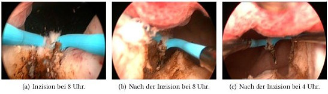

You are here: Urology Textbook > Prostate > BPH > Surgical treatment
Surgery for Benign Prostatic Hyperplasia (BPH)
- Benign prostatic hyperplasia (1/6): definitions, epidemiology and etiology
- Benign prostatic hyperplasia (2/6): signs and symptoms
- Benign prostatic hyperplasia (3/6): diagnosis
- Benign prostatic hyperplasia (4/6): treatment algorithm
- Benign prostatic hyperplasia (5/6): medical treatment
- Benign prostatic hyperplasia (6/6): surgical treatment
Review literature: (Burnett und Wein, 2006) (DGU-Guideline: diagnostic work-up, 2009) (DGU-Guideline: treatment, 2009) (EAU-Guideline: Oelke et al, 2010)
Transurethral Resection of the Prostate (TURP)
Transurethral resection of the prostate (TURP) is the endoscopic removal of prostate tissue using an electrical wire loop (monopolar or bipolar electrocautery). TURP is the gold standard of invasive therapy for benign prostatic syndrome (BPS) up to a maximum of 75–100 ml prostate volume, accounting for over 90% of all invasive procedures
Indications for TURP:
The most common indication for TURP is moderate to severe symptoms of BPH, which cannot be controlled with medication and lower the quality of life of the patients. Furthermore, surgical therapy is indicated:
- After recompensation of postrenal kidney failure
- Recurrent urinary retention
- Recurrent urinary tract infections
- Recurrent hematuria
- Huge bladder diverticula
Surgical Technique and Complications of TURP:
Please see section transurethral resection of the prostate (TURP) for details.
Results of TURP:
TURP significantly and persistently improves urinary stream (+160%), IPSS(-70%), quality of life and residual urine volume (-77%). Voiding symptoms are treated more successfully than storage symptoms. Nocturia is not improved in 20–40%. The data for efficacy and durability from controlled studies is superior and does not exist to this extent for any of the alternative procedures listed below.
Transurethral Incision of the Prostate (TUIP)
In TUIP, two incisions from the bladder neck to the verumontanum are done next to the midline at 5 and 7 o'clock with the resectoscope. TUIP is well suited for the treatment of small volume prostates and for young patients. Advantages: lower surgical risks (blood loss, TUR-syndrome), reduced rate of retrograde ejaculation (0–37%).
Transurethral incision of the prostate (TUIP) leads to desobstruction by incising the bladder neck and prostate tissue.
Indication: well suited for the treatment of small volume prostates (below 40 ml) and for young patients. Advantages: lower surgical risks (blood loss, TUR-syndrome), reduced rate of retrograde ejaculation (0--37\,\%).
Technique: two incisions from the bladder neck to the verumontanum are done at 4 and 8 o'clock position with the resectoscope using a hook electrode [Abb. Technik der TUIP].
|  |
Endoscopic Enucleation of the Prostate (EEP)
In (anatomical) endoscopic enucleation of the prostate (EEP or AEEP), the entire prostate adenoma is mobilized transurethrally along the pseudocapsule comparable to an open-surgical adenomectomy and removed transurethrally using a morcellator.
Indication:
EEP is an alternative to TURP and to open surgical adenomectomy. With good technical expertise, any prostate volume can be treated effectively.
Surgical technique:
The first incision are done at the apex, then the adenoma is mobilized under direct vision and different energy techniques are used for cutting:
- HoLEP: Holmium laser enucleation of the postate
- ThuLEP: Thulium laser enucleation of the postate
- GreenLEP: Greenlight laser enucleation of the postate
- BipolEP: Bipolar enucleation of the postate
The prostate adenoma is completely mobilized into the urinary bladder and removed using a morcellator.
Results and complications:
Randomized trials demonstrated comparable efficacy, shortened catheterization times (1–2 days), lower blood loss, and shorter hospital stay compared with TURP or open surgical adenomectomy.
Transurethral Laser Treatment for Benign Prostatic Hyperplasia (BPH)
Different Techniques of Prostate Laser Treatment:
Due to the availability of various laser types with different physical properties, a variety of clinical procedures have been developed:
Transurethral Ultrasound-Guided Laser-Induced Prostatectomy (TULIP):
TULIP is medical history, direct visualization of the laser effects were not possible.
Visual laser ablation of the prostate (VLAP):
VLAP is medical history, Synonym: interstitial laser therapy of the prostate. VLAP was a side-fire laser application with tissue coagulation under vision. VLAP leads to necrosis of the adenoma and (later) in an improvement of symptoms. The technique is no longer used due to better alternatives.
Holmium laser enucleation of the prostate (HoLEP):
See above endoscopic enucleation of the prostata (EEP).
Transurethral evaporization of the prostate (TUEP):
The high power of laser application (KTP greenlight or thulium) leads to vaporization of prostate tissue with good tissue ablation and good coagulation of deeper prostate tissue layers. The treatment can be performed under ongoing anticoagulation, and the development of a TUR syndrome is low. The procedure is particularly suitable for cardiac risk patients. Disadvantages include high equipment and probe costs. For technique and complications see section Greenlight laser vaporization of the prostate
Results from randomized trials with Laser techniques for BPH:
Of the numerous laser procedures, HoLEP and KTP laser vaporization have stood the test of time. For both procedures, randomized studies are available, which show comparable results and reduced complications in comparison to TURP or transvesical prostatectomy (Kuntz et al, 2004) (Kuntz et al, 2008) (Reich et al, 2011) Laser enucleation is superior to vaporization for prostates with a volume over 60 ml (Elmansy et al, 2012).
Transvesical and Retropubic Open Simple Prostatectomy
Indication for adenomectomy:
Simple prostatectomy is indicated in large prostate adenomas with volumes over 80–100 ml. If huge bladder diverticula or bladder stones must be treated, simple prostatectomy is wise even with smaller prostate volumes. Other indications for simple prostatectomy are complex urethral diseases (e.g. after hypospadia correction) and existing contraindication to lithotomy position.
Technique and Complications of Simple Prostatectomy:
Suprapubic simple prostatectomy is suitable for significant middle lobe enlargement, treatment of bladder stones and correction of huge bladder diverticula. Retropubic simple prostatectomy offers the advantage of better hemostasis and better apical preparation, but it is not ideal with a large median lobe, bladder diseases or obesity. For a detailed description of the surgical techniques and complications, see section transvesical prostatectomy and retropubic simple prostatectomy.
New Interventional Methods
Prostatic Artery Embolization (PAE)
Prostatic artery embolization has been used to treat macrohematuria due to BPH for many years. Follow-up showed improvement of voiding symptoms in many patients, so PAE is currently used for this indication as well.
Indication:
PAE is an alternative to TURP or adenomectomy for voiding symptoms or recurrent macrohematuria without relevant associated pathology such as bladder stones or large diverticula.
Technique:
Superselective probing of the prostatic arteries, injection of small embolization particles with careful sparing of penile or rectal arteries. For successful treatment, bilateral embolization is necessary. In the course, tissue necrosis and reduction of prostate volume occurs with gradual improvement of voiding symptoms.
Results:
Improvement in micturition symptoms starts after months and may continue to improve in the further course. In comparative studies, TURP was shown to be more effective in improving symptoms, urinary stream, residual urine, prostate volume, and IPSS (Abt et al, 2018) (Ray et al, 2018). PAE has also been used in patients with urinary retention, who were not suitable for TURP, with a success rate of 60%. Long-term results are not available. PAE is a treatment option for patients with inadequate symptom control with medication who are not suitable for or do not desire surgical therapy.
Complications:
Diminished ejaculation and dysuria are common. Less common are persistent dysuria, urinary retention (3–7%), high radiation exposure (radiation dermatitis), mis-embolization (urinary bladder, rectum, penis) and complications of angiography.
Transurethral microwave therapy (TUMT)
Transurethral microwave therapy (TUMT) uses microwaves (900–1300 MHz) to heat the prostate tissue up to 70 degrees Celsius, while the urethral mucosa is cooled by a special catheter. Newer generation devices are e.g. Prostatron, ProstaLund and Targis. TUMT leads to heat necrosis, apoptosis and destruction of adrenergic nerve fibers in the prostate with an improvement of symptoms. For TUMT with newer generation devices, sedation and analgesia is necessary.
Indications for TUMT:
TUMT shares the same indications like TURP, but is also applicable in patients with higher comorbidity.
Results of TUMT:
Randomized trials show a significant improvement in symptoms, which is, however, not always accompanied with an improvement in objective parameters like maximum urinary flow. There are only few side effects; the main complication is the necessity of postoperative long-term catheterization. There is a significant proportion of patients, which need different treatment due to treatment failure of TUMT.
Transurethral Needle Ablation of the Prostate (TUNA)
Needle probes are inserted into the adenoma under direct vision (and TRUS imaging), a heat necrosis of the adenoma is induced with microwaves (500 kHz). The technique can be performed under local anesthesia or spinal anesthesia.
Results of TUNA:
The advantage is the treatment option without the need for general anesthesia or hospitalization. The initial postoperative course is characterized by recurrent urinary retention in 13–40% of patients, until the necrotic tissue is discharged.
Transurethral Vaporization of the Prostate (TUVP)
Monopolar or bipolar current is used to vaporize the prostatic tissue next to the electrode, while coagulation occurs in deeper tissue planes. The electrodes have the form of a rolling cylinder or a thick loop (thick loop resection).
Results of TUVP:
Randomized trials demonstrated similar results between TUVP and TURP, without dramatic clinical benefits for TUVP (a trend towards less blood loss).
Transurethral Urolift procedure
The urolift procedure is a nonablative surgical technique for desobstruction of the prostatic urethra (Berges et al, 2013). The procedure is a minimally invasive treatment option in patients with relative indications for surgery (without urinary retention or recurrent macrohematuria), a prostatic volume less than 60 ml, and no significant middle lobe. Advantages are the low complication rate and the preservation of antegrade ejaculation.
Surgical technique: using an applicator, 2--6 small tissue retractors are inserted transurethrally into the prostate, compressing the prostate tissue and allowing a channel with better flow between the bladder neck and sphincter.
Results: long-term results after five years showed stable improvement in symptom score and urinary flow without negative impact on sexual function (Roehrborn et al, 2017).
Image-Guided Robot-Assisted Water Jet Prostate Ablation
Transurethral sonography is used to mark the areas of the prostate that are to be ablated. The robotically guided water jet (Aquabeam) removes the tissue within a few minutes (aquablation of the prostate), hemostasis is achieved either by an irrigation catheter on traction or by subsequent electrocoagulation.
Results: same operating time as TURP, advantages of the procedure are gentle tissue ablation without heat effect. Problematic is the high rate of postoperative bleeding complications, at least without interventional hemostasis after ablation. In prostate glands larger than 100 ml, a transfusion rate of 8% has been reported (Desai et al, 2019). Other disadvantages include numerous exclusion criteria and the lack of histology.
Transurethral Water Vapour Therapy (Rezum)
Under local anesthesia, needles are inserted cystoscopically into the prostate tissue. A heat necrosis of the prostate tissue is created with the help of water vapor. The thermal effect is limited to the prostate.
Results: well-tolerated procedure with preservation of sexual function. Randomized results comparing with reference procedures are not available.
Laparoscopic Adenomectomy
Laparoscopic (robotically assisted) adenomectomy uses both the transvesical or the retropubic surgical technique. The OR time is significantly higher than with open surgery, but there are advantages in bleeding volume (340 vs 590 ml) and length of hospital stay (Sorokin et al, 2017). Only few centers use laparoscopic adenomectomy regularly.
| BPH medication | Index | Seminal vesicle stones |
Index: 1–9 A B C D E F G H I J K L M N O P Q R S T U V W X Y Z
References
- Burnett und Wein 2006 BURNETT, A. L. ; WEIN, A. J.:
- Benign prostatic hyperplasia in primary care: what you need to know.
In: J Urol
175 (2006), Nr. 3 Pt 2, S. S19–24
- Chapple 2004 CHAPPLE, C. R.:
- Pharmacological therapy of benign prostatic hyperplasia/lower urinary
tract symptoms: an overview for the practising clinician.
In: BJU Int
94 (2004), Nr. 5, S. 738–44
- DGU-Guidelines: diagnostic work-up
- Leitlinien der Deutschen Urologen zur Diagnostik des benignen
Prostatasyndroms (BPS).
In: Urologe A
48 (2009), S. 1356–60, 1362–4 - DGU-Guidelines: treatment
- Leitlinien der Deutschen Urologen zur Therapie des benignen
Prostatasyndroms (BPS).
In: Urologe A
48 (2009), S. 1503–1516 - Donovan u.a. 2000 DONOVAN, J. L. ; PETERS, T. J. ; NEAL, D. E. ; BROOKES, S. T. ; GUJRAL, S. ; CHACKO, K. N. ; WRIGHT, M. ; KENNEDY, L. G. ; ABRAMS, P.:
- A randomized trial comparing transurethral resection of the prostate,
laser therapy and conservative treatment of men with symptoms associated with
benign prostatic enlargement: The CLasP study.
In: J Urol
164 (2000), Nr. 1, S. 65–70
- Oelke, M.; Bachmann, A.; Descazeaud, A. & Emberton, M.
- Guidelines
on conservative treatment of non-neurogenic male LUTS
www.uroweb.org, 2010. - Reich u.a. 2006 REICH, O. ; GRATZKE, C. ; STIEF, C. G.:
- Techniques and long-term results of surgical procedures for BPH.
In: Eur Urol
49 (2006), Nr. 6, S. 970–8; discussion 978
- Uygur u.a. 1998 UYGUR, M. C. ; GUR, E. ; ARIK, A. I. ; ALTUG, U. ; EROL, D.:
- Erectile dysfunction following treatments of benign prostatic
hyperplasia: a prospective study.
In: Andrologia
30 (1998), Nr. 1, S. 5–10
 Deutsche Version: Operative Therapie der benignen Prostatahyperplasie
Deutsche Version: Operative Therapie der benignen Prostatahyperplasie